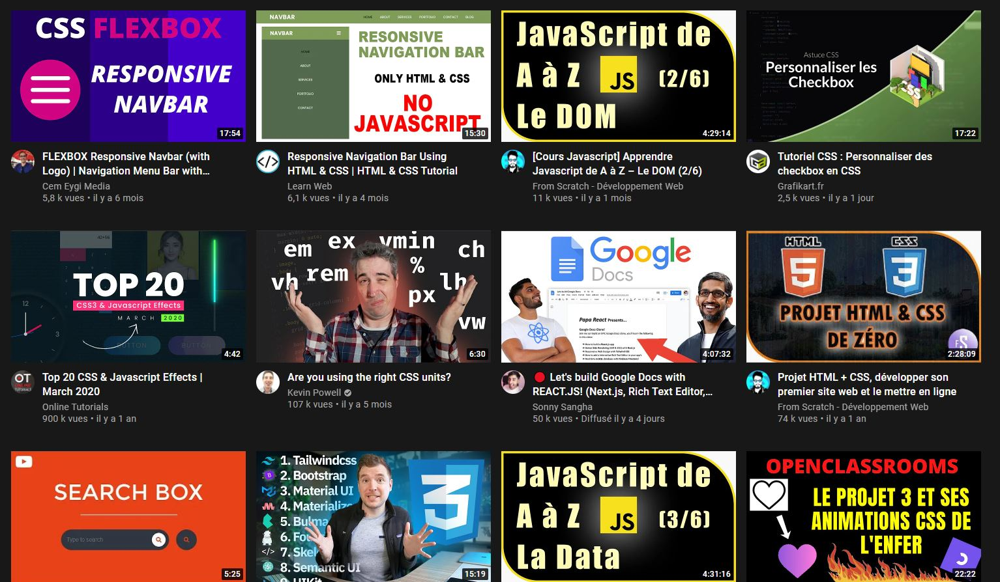

Youtube
Youtube est à mes yeux l'outils de veille technologique le plus important pour plusieurs raisons. En plus d'être une mine intarissable d'informations et de tutoriels divers, il permet de se maintenir à jours technologiquement assez simplement car nous pouvons y consulter son contenu aisément pendant notre temps libre.A l'heure ou le smartphone est devenu notre meilleur compagnon il n'est pas difficile d'y consulter de nombreuses vidéos tout au longs de nos journées que ce soit à la pause déjeuner,dans les transports ou encore avant de se coucher! Une petite baisse de motivation? pourquoi pas une petite vidéo de Mike Codeur! cette unité CSS me semble obsolète! Allons vérifier cela chez Kevin Powell! Je suis le maître absolu du CSS à moi les challenge de Graven!
Discord
j'apprécie tout particulièrement Discord pour alimenter ma veille technologique car il me permet de sélectionner méticuleusement mes sources d'informations par le biais de son système de serveurs. Il permet ainsi de faire partie intégrante d'une communauté ce qui apporte des avantages non négligeable comme la proximité avec les professionnels ou influenceurs, la rapidité de communication grâce au chat et la possibilité de discuter de vive voix avec d'autres passionnés.
Twitter au dela de sa casquette de réseau social, est unanimement reconnu comme étant un excellent outil de veille. Son moteur de recherche puissant nous permet de cibler et de suivre toute information voulue,le tout dans un format court. Sa renommée mondiale fait qu'on y retrouve tous les acteurs du monde de la tech.Ces derniers une fois suivis,nous avons accès en un clin d'oeil à de nombreuses informations sur des thématiques diverses.
Stack Overflow

Enfin je choisis Stack overflow.En effet en tant qu'étudiant au développement web je risque de passer beaucoup de temps sur ce site.Je pense que l'on peut apprendre beaucoup de choses en consultant les problèmes que d'autres personnes ont pu rencontrés.On y trouve des post sur tous les sujets ou presque que ce soit du contenu débutant ou expérimenté.